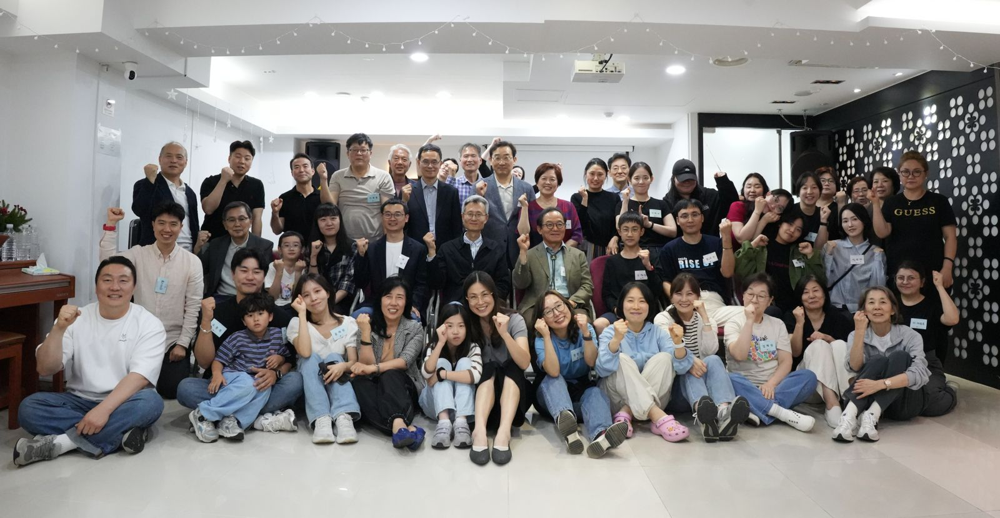
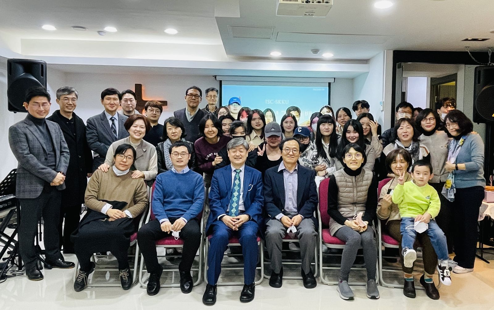
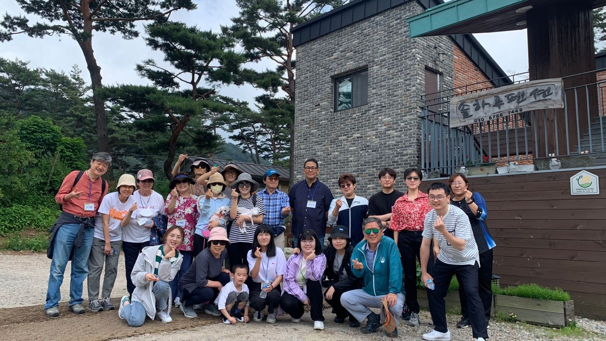

教会介绍
ISC-SKKU Seoul(성균관대 유학생교회)은 예배, 교육, 훈련, 양육, 교제를 통해 유학생들의 신앙 성장을 지원하며, 유학생들이 겪는 영적·생활적 어려움을 함께 나누고 사랑으로 섬기는 공동체입니다.
특히 유학생들이 졸업 후 본국으로 귀국하더라도 복음을 증거하는 선교적 제자로 살아갈 수 있도록 준비시키는 것을 중요한 사명으로 삼고 있습니다. 예배는 한국어와 중국어로 함께 드리며, 중국으로 귀국한 졸업생들도 온라인으로 계속 참여하고 있습니다.
我们是一个以中国留学生为主的校园教会，用中文和韩文一起敬拜。无论你来韩国多久、是否去过教会，都欢迎你来！
崇拜时间
현장 예배와 Zoom 온라인 예배를 함께 드립니다. 처음 오시는 분도 언제든지 환영합니다.
主日崇拜
매주 일요일 오후 3:00
말씀 선포, 찬양, 기도, 나눔. 예배 후 셀 모임과 격주 애찬 교제가 이어집니다.
桥头堡祷告会
매주 수요일 저녁 6:00–9:00
교회 부흥과 영적 각성을 위한 집중 기도의 시간입니다.
小组聚会
주일예배 후
말씀을 나누고 서로의 삶을 위해 기도하는 소그룹 모임입니다.
Shalom Lounge
평일 상시 개방
학습 공간과 커피·차가 준비된 유학생들의 영적·학업적 쉼터입니다.
事工介绍
정기적인 세례 교육과 세례식을 통해 새 생명들이 그리스도 안에서 거듭나고 있습니다.
유학생들의 제한된 체류 기간을 고려한 집중적이고 체계적인 양육: 심화 성경공부, 리더십 훈련, 신앙 기초 확립.
차세대 유학생 사역 리더를 세우기 위한 리더십 개발, 섬김 훈련, 사역 실습.
교재 「복음의 기초」로 유학생 리더와 교수진이 함께하는 소그룹 성경공부를 진행합니다.
本周消息
2026년 7월 12일 주일
教会相册



在线崇拜
주일예배 실황과 설교 영상은 유튜브 채널에서 보실 수 있습니다. 아래 영상 목록은 채널에 새 영상을 올리면 자동으로 갱신됩니다.
联系我们
우리은행 1005-303-895466
예금주: ISCSKKU 교회
처음 방문을 원하시면 이메일이나 전화로 먼저 연락 주셔도 좋습니다. 欢迎提前联系我们，主日见！